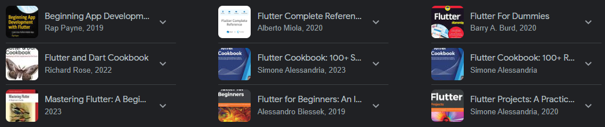

Publicado
- Indicações mobile
Flutter
Flutter transforms the development process. Build, test, and deploy beautiful mobile, web, desktop, and embedded experiences from a single codebase..
O flutter é um kit de ferramentas para desenvolvimento open-source que utiliza a linguagem Dart. É utilizado para criar aplicações para desktop e mobile, sendo disponibilizado e feito pela Google.
A escolha desse kit se deu por sua grande gama de livros, o que possibilita um estudo mais aprofundado sobre suas possibilidades aplicacionais.
O que é Flutter?

Tutorial
Existem diversos tutoriais de Flutter na web, que vão desde tutoriais pagos à gratuitos. No Youtube é possível aprender a mexer nesse framework com o canal Net Ninja que contém mais de um milhão de inscritos. O youtuber apresenta uma playlist com 35 vídeos ensinando a usar a ferramenta adequadamente.
Contudo os vídeos são em inglês, portanto aqui vai uma segunda possibilidade de tutorial gratuito:
O curso do Jacob Moura é apresentado em formato de playlist contendo mais de 50 vídeos sobre o tema. Na bio de seu canal ele menciona que seu canal "Flutterando" é a maior comunidade de Dart do Brasil. Clique aqui para acessar o link de sua playlist!
Livro
Esse framework apresenta boa gama de livros a seu respeito, como podermos ver em uma breve pesquisa pelo Google:
Ao entrarmos na Amazon, o livro de maior destaque é o Flutter na Prática que está disponível para aquisição na plataforma. Caso seja de seu interesse comprá-lo, acesse aqui: amazon.com.br/Flutter-Prática-Melhore-Desenvolvimento-Recente
Vídeo sobre
Hipsters Ponto Tech
Uma ótima recomendação de podcast a ser ouvido sobre o assunto é o do perfil Hipsters Ponto Tech (muito recomendado pelo professor Luiz Rauber Rodrigues). Lá eles falam sobre diversos assuntos relacionados a tecnologia, programação, entre outros. Sendo assim um bom meio de compreender mais a fundo as linguagens e frameworks mais utilizados no mercado.
Nesse episódio falarão sobre "o que é, pra que serve, como funciona e como está o mercado". Conta com a partipação de Paulo Silveira, host que achou o Flutter uma ótima ideia, Igor Borges o engenheiro de sotware do Nubank, entre outros.
Influencer
O maior influencer com esse tema é o Jacob Moura, dono do Flutterando. Ele tem mais 17,5K de seguidores e disponibiliza em sua bio um link de acesso a uma comunidade de amantes de Flutter, a maior da América Latina.
Seu conteúdo é bem interessante, pois contém desde dicas e linkagens de eventos sobre Flutter, até postagens de descontração sobre seu dia e piadas sobre o framework.